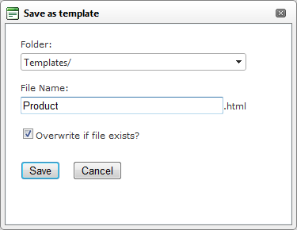

Saving a Template
How to create and save a template using the DotNetNuke.RadEditorProvider for the RTE.
- Create your template by adding content such as text, images and tables as desired.
- Select
 Save Template from the actions toolbar. This opens the Save As Template window.
Save Template from the actions toolbar. This opens the Save As Template window.
- At Folder, select the folder where the template will be saved to.
- In the File Name text box, enter a name for this template.
- At Overwrite If File Exists?, check
 the check box to overwrite any template that exists with this template - OR - Uncheck
the check box to overwrite any template that exists with this template - OR - Uncheck  the check box if you don't want to override an existing file. This enables warning message if a template with this name already exists.
the check box if you don't want to override an existing file. This enables warning message if a template with this name already exists.

- Click the Save button.
- If there is no conflict with overwriting, the message "The template was saved successfully'" is displayed. Click OK to close the window.
- If there is a conflict, a message reading "The template was not saved. The following error was reported:
The file already exists" is displayed. In this case, repeat Steps 2-6, entering a different file name.